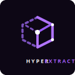
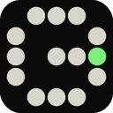
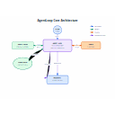
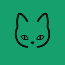

AI agent tools launched this week (Oct 26 – Nov 1, 2026), page 2
280 tools added Oct 26 – Nov 1, 2026. Page 2 of 3. Ranked by votes this week, then by the date added. Top: Odysseus AI, ODS, OB1.
Quick answer: The newest additions on this page are Odysseus AI, ODS, OB1. This page covers tools launched this week. Vote counts start at zero and come from the server, one vote per visitor per day. Ties stay in the order the tools were added, newest first.
New toolsSubmit freeFast-Track ($15)
- 101

Odysseus AI
A private AI workspace for deep research and autonomous agents. Turn files into source-traceable reports with OpenRouter BYOK and custom MCP tools
More+0 todayView - 102
ODS
ODS V3 Pre-Release: Public testing and refinement ahead of the official V3 launch. Turn your PC, Mac, or Linux box into a private AI server
More+0 todayView - 103
OB1
Open Brain — The infrastructure layer for your thinking. One database, one AI gateway, one chat channel — any AI plugs in.
More+0 todayView - 104
NornicDB
Nornicdb is a distributed low-latency, Graph+Vector, Temporal MVCC with all sub-ms HNSW search, graph traversal, and writes. Using Neo4j Bolt/Cypher and qdrant's gRPC means you can switch with no.
More+0 todayView - 105
Nightingale
Nightingale is a self-hosted alerting system with a built-in AI agent for metrics, logs, and databases
More+0 todayView - 106

Nexscope
Connect seller-grade marketplace data to your AI agents. Turn product assets into videos built to sell with Nexscope ecommerce data and AI video tools
More+0 todayView - 107
Neuwark
Neuwark builds AI-native agents that execute end-to-end workflows across Accounting, Healthcare, Claims, Tax, Legal, Supply Chain, Consulting, and Recruitment
More+0 todayView - 108

Nekro Agent
NekroAgent ， Claude Code 、 、 、 MCP ， 、 、 。 QQ、Discord、Telegram、Minecraft、BilibiliLive、WeChat、Email、SSE(SDK) ， ， 、 、 Agent
More+0 todayView - 109

Mysql MCP Server
A Model Context Protocol (MCP) server that enables secure interaction with MySQL databases
More+0 todayView - 110

Modlens
The first vision plugin for DeepSeek Harness, and the vision bridge for every text-only coding agent. Paste an image, get structured JSON evidence (OCR, layout, semantics).
More+0 todayView - 111

Mnemon
LLM-supervised persistent memory for AI agents — graph-based recall, cross-session knowledge, single binary. Works with DeepSeek Harness, Claude Code, OpenClaw, and any agent runtime
More+0 todayView - 112
Mirrord
mirrord runs a local process, including an AI agent's, as if it were a pod in your Kubernetes cluster
More+0 todayView - 113
Mirobody
Mirobody is a self-hosted AI health-data engine that answers questions about lab reports you can trace
More+0 todayView - 114
MightyBot
MightyBot is a policy-driven agent platform for regulated work that automates documents and decisions under written policy.
More+0 todayView - 115

Metaflow AI
AI Marketing Agents for SEO, AEO, paid ads, Reddit, and outbound automation. Pre-built, evaluated, and production-ready — no prompt engineering required
More+0 todayView - 116
Metabot
Metabot is XVI Robotics' infrastructure for supervised, self-improving agent organizations that run physical and software agents together.
More+0 todayView - 117
Memsearch
A persistent, unified memory layer for all your AI agents (e.g. Claude Code, Codex, DSH), backed by Markdown and Milvus
More+0 todayView - 118
Master Fetch
MCP server for web fetching with Cloudflare bypass, Trafilatura extraction, and smart routing. Free, self-hosted, no API keys
More+0 todayView - 119
Manuscript Core
Manuscript is a revolutionary blockchain data streaming framework. With Manuscript, you can seamlessly integrate on-chain and off-chain data into target data storage for unrestricted querying and analysis
More+0 todayView - 120+0 todayView
- 121

MCP Gateway Registry
Enterprise-ready MCP Gateway & Registry that centralizes AI development tools with secure OAuth authentication, dynamic tool discovery, and unified access for both autonomous AI agents and AI coding.
More+0 todayView - 122

MCP Gateway
MCP Gateway is a reverse proxy and management layer for MCP servers, enabling scalable, session-aware stateful routing and lifecycle management of MCP servers in Kubernetes environments
More+0 todayView - 123

Lovable
Lovable is an AI app builder that turns a prompt into a full-stack web app you can edit, publish, and connect to your own tools.
More+0 todayView - 124

Loop Engineering
Practical patterns, starters & CLI tools for loop engineering with AI coding agents. Design systems that prompt and orchestrate agents (inspired by Addy Osmani and Boris Cherny).
More+0 todayView - 125
LongTerMemory
LongTerMemory turns notes, slides, and textbook photos into questions, a study plan, and spaced repetition
More+0 todayView - 126
Litespace
Litespace plugs into an ATS to screen, rank, and evaluate candidates from resume to interview
More+0 todayView - 127
Lightswind UI Library
The AI-native CLI-first React component library. 160+ animated, accessible, production-ready components with MCP Server support for Cursor, Claude & GitHub Copilot.
More+0 todayView - 128

LightAgent
LightAgent: Lightweight Python framework for OpenAI-compatible agents with tools, memory, guardrails, tracing, lifecycle hooks, multi-agent collaboration, and workflows
More+0 todayView - 129

Libredesk
Open-source, self-hosted customer support desk in a single binary. A lightweight alternative to Intercom, Zendesk, Chatwoot
More+0 todayView - 130

LearnHarness
Desktop agent harness for learning hard subjects: the tutor probes where your understanding ends, follows your written reasoning, then plans explanations and prediction-style practice around your gaps. Free for.
More+0 todayView - 131
Learn Place
Learn Place is a personalized learning assistant for students and professionals studying technical subjects
More+0 todayView - 132

Leaping AI Voice Agents
Deploy enterprise-grade AI voice agents with Leaping AI to automate customer service and appointment booking calls. Trusted by leading companies such as Eurowings and Thompson Creek Window Company
More+0 todayView - 133
Korean Law MCP
Korean Law MCP lets an assistant search Korean statutes, cases, and local rules and check citations
More+0 todayView - 134

Keypaste
Local, KeePass-compatible password and secrets manager built for agent workflows: logins and project environment variables live in one KDBX file, and when an agent asks for a credential via CLI or MCP you see who is.
More+0 todayView - 135
 +0 todayView
+0 todayView - 136

Kami
Good content deserves good paper. Layout rules and templates that let AI agents export PDF, PNG and editable PowerPoint
More+0 todayView - 137+0 todayView
- 138
K8m
、 Mini Kubernetes AI Dashboard， + +MCP( )， 、 、 ， ， 。. It helps an agent inspect infrastructure, incidents, or delivery pipelines.
More+0 todayView - 139
 +0 todayView
+0 todayView - 140
Jupid
Jupid is AI bookkeeping for freelancers and LLCs that categorizes expenses and drafts a Schedule C
More+0 todayView - 141
Jshookmcp
A search-first, profile-aware reverse-engineering workspace for AI agents — 735 tools across 36 domains in one MCP server
More+0 todayView - 142
Jscpd
Copy/paste detector for source code. 220+ languages, Rust engine, SARIF/HTML/badge reporters, GitHub Action, MCP server for AI agents
More+0 todayView - 143
JeecgBoot
【 v2.0， 】 AI ， 。 AI Skills 、 、 、 。 AI ：AI 、 、 、MCP ， 。 AI 「Skills → → → - AI 」 ， Java 90% ， 。
More+0 todayView - 144+0 todayView
- 145
IoT DC3
IoT DC3 is an open-source industrial IoT runtime for physical AI, connecting devices to agent workflows
More+0 todayView - 146
Interviewer.AI
Interviewer.AI runs video interviews that screen candidates and send a scorecard to the hiring team
More+0 todayView - 147

Interceptor
Browser automation and computer use for AI agents. One CLI and MCP server for your signed-in browser, native macOS apps, and real iPhones
More+0 todayView - 148
InnoShop
InnoShop is an open-source e-commerce system with AI assistants for catalog and store work
More+0 todayView - 149+0 todayView
- 150

Hyper Extract
Hypergraph is more powerful. Transform unstructured text into structured knowledge with LLMs.
More+0 todayView - 151+0 todayView
- 152

Hugo
Hugo is an AI-powered support agent that resolves tickets faster, automates repetitive tasks, and serves your customers 24/7
More+0 todayView - 153

Heyyala
Accelerate your sales on WhatsApp with AI agents that respond 24/7 using effective sales strategies and providing immediate customer service
More+0 todayView - 154

Hexstrike AI
HexStrike AI MCP Agents is an advanced MCP server that lets AI agents (Claude, GPT, Copilot, etc.) autonomously run 150+ cybersecurity tools for automated pentesting, vulnerability discovery, bug.
More+0 todayView - 155

Helix Foundry
Connects Postgres, MySQL, S3, Stripe, GitHub, Linear and uploaded documents, lets an agent draft an ontology you review and version, then loads it into HelixDB as one graph you can explore and query with answers.
More+0 todayView - 156

Greptimedb
The open-source observability database. One columnar engine for metrics, logs, and traces, on object storage
More+0 todayView - 157

Gortex
High-performance code-intelligence engine for AI agents and IDE, supports 257 languages, multi repositories, based on graph, with access via CLI, MCP Server, and API. AI coding agents teammate.
More+0 todayView - 158
GoHire
GoHire is a high-volume text recruiting agent that lets candidates apply and schedule by SMS
More+0 todayView - 159+0 todayView
- 160

GenflowAI
Discover creator-published AI templates and ready-made content for ecommerce visuals, UGC videos, brand commercials, short-form video ads, and social campaigns
More+0 todayView - 161
Gearboy
Game Boy / Game Boy Color / Super Game Boy emulator and debugger with embedded MCP server for macOS, Windows, Linux, BSD and RetroArch
More+0 todayView - 162
Fresh Start
The original nirholas/claude-code before DMCA and take down. Once everything is cleared, it will return.
More+0 todayView - 163
 +0 todayView
+0 todayView - 164

FluidUse
Local computer use on Apple silicon: on-device typed decisions with laya and form filling with CUA-S1-FORMS, driven through the macOS Accessibility API
More+0 todayView - 165
FlowGent
FlowGent answers shoppers in Instagram DMs, WhatsApp, and an on-site chat, including Shopify stores
More+0 todayView - 166

Fireworks Tech Graph
Generate production-quality SVG+PNG technical diagrams from natural language. 7 styles, UML support, and AI/Agent workflow patterns
More+0 todayView - 167

Ffmpeg Skill
Local video editor for coding agents: 42 FFmpeg tools with a machine-readable contract and an MCP server, for Claude Code, Cursor and Codex. Cut, captions, reframe, loudness, platform exports.
More+0 todayView - 168

Fence
Lightweight, container-free sandbox for running commands with network and filesystem restrictions
More+0 todayView - 169

Excelize
Go language library for reading and writing Microsoft Excel™ (XLAM / XLSM / XLSX / XLTM / XLTX) spreadsheets
More+0 todayView - 170

Erd Editor
Design database schemas as ERDs in your browser, VS Code, JetBrains IDEs or Obsidian. Import SQL, DBML and GraphQL, export DDL and code, and let coding agents edit live over MCP
More+0 todayView - 171
Emilia Protocol
Authority control plane for autonomous work. EMILIA Gate enforces finite customer-owned mandates at protected executor boundaries; the open protocol keeps evidence verifiable
More+0 todayView - 172
Emblemvault
EmblemAI helps users research markets, check balances, swap assets, and use crypto across eight chains with plain-English prompts
More+0 todayView - 173

Edgeever
AI-native knowledge base & Evernote/Obsidian alternative with instant sync & native MCP. Free on Cloudflare or self-hosted via Docker
More+0 todayView - 174
EVA
EVA is an AI-assisted penetration testing agent that enhances offensive security workflows by providing structured attack guidance, contextual analysis, and multi-backend AI integration
More+0 todayView - 175
EPA608Pass
EPA608Pass is an exam-prep agent with practice questions and mock exams for the EPA 608 certification
More+0 todayView - 176

ECC
The agent harness performance optimization system. Skills, instincts, memory, security, and research-first development for Claude Code, Codex, Opencode, Cursor and beyond
More+0 todayView - 177

Duckle
Open-source ETL/ELT you deploy on your own servers or cloud. Built on DuckDB: no-code/low-code visual pipelines or SQL, 385 components, dbt, CDC, data quality, reverse ETL, lineage, MCP for AI agents.
More+0 todayView - 178
Dsh Our Free Model
dsh ， 、 API Key， DeepSeek V4.1 Flash、Kimi K3 —— ， 。 All you do is install this plugin in dsh: no login, no sign-up, no API key — the frontier models are just there, DeepSeek V4.1 Flash and Kimi K3.
More+0 todayView - 179

Douyin TikTok Download API
、TikTok API， AI agent MCP ，Docker 。 Self-hosted TikTok & Douyin scraper and no-watermark video downloader — async REST API, MCP server for AI agents, CLI and web console, plus offline speech-to-text.
More+0 todayView - 180

Dory
Dory is the complete local development system for Apple Silicon: Docker, Compose, Kubernetes, virtual machines, and policy-bound agent sandboxes
More+0 todayView - 181

Dormice
The SQLite of agent sandboxes — self-hosted, E2B-compatible. One machine, sandboxes that live forever, idle costs nothing
More+0 todayView - 182

Docmost
Docmost is an open-source collaborative wiki and documentation software. It is an open-source alternative to Confluence and Notion
More+0 todayView - 183

Dialora.ai
Dialora AI provides advanced AI voice agents for businesses worldwide. Automate customer service, boost sales, and improve efficiency with our AI solutions
More+0 todayView - 184
Diagram Design
Editorial diagram design for Claude Code, Codex, GitHub Copilot, Cursor, Factory Droid, and Pi. 44 diagram types.
More+0 todayView - 185
Devopness
Devopness is an AI DevOps agent that deploys apps, infrastructure, and CI/CD through one MCP server
More+0 todayView - 186
Design Extract
Extract any website's complete design system with one command. DTCG tokens, semantic+primitive+composite, MCP server for Claude Code/Cursor/Windsurf, multi-platform emitters (iOS SwiftUI, Android.
More+0 todayView - 187

Dbx
25 MB lightweight cross-platform database client for 100+ databases, including MySQL, PostgreSQL, SQLite, Redis, MongoDB, DuckDB, SQL Server, and Dameng. Built-in AI, MCP Server, CLI, desktop and Docker.
More+0 todayView - 188
Datagouv MCP
Official data.gouv.fr Model Context Protocol (MCP) server that allows AI chatbots to search, explore, and analyze datasets from the French national Open Data platform, directly through conversation
More+0 todayView - 189

Dataagent
DataFoundry is an open-source AI workbench for data analysis, unifying data sources, knowledge, tools, and agent runtime into a governed workspace for interactive analytics
More+0 todayView - 190

Dashboard Icons
3,400+ curated icons and logos for dashboards and AI agents. SVG, PNG and WEBP on a free CDN, plus an MCP server for Claude Code, Codex, ChatGPT, Cursor, Hermes and OpenClaw
More+0 todayView - 191
Dark Moon
Open-source autonomous AI penetration testing. 50 specialist agents across web, API, cloud, Active Directory, Kubernetes, CI/CD and AI/LLM (OWASP LLM Top 10).
More+0 todayView - 192
Dapr
Dapr is a portable runtime for building distributed applications across cloud and edge, combining event-driven architecture with workflow orchestration
More+0 todayView - 193
Dagger
Automation engine to build, test and ship any codebase. Runs locally, in CI, or directly in the cloud
More+0 todayView - 194
Cve MCP Server
Production-grade MCP server giving Claude 27 security intelligence tools across 21 APIs — CVE lookup, EPSS scoring, CISA KEV, MITRE ATT&CK, Shodan, VirusTotal, and more
More+0 todayView - 195

Cube
Cube is an open-source semantic layer that lets BI tools and AI agents query the same metrics
More+0 todayView - 196
Crw
Fast, lightweight Firecrawl/Tavily alternative in Rust. Web scraper, crawler & search API with MCP server for AI agents.
More+0 todayView - 197
Crosspaste Desktop
Cross-device clipboard sync for macOS, Windows & Linux — end-to-end encrypted, LAN-only, no cloud. OCR, CLI and MCP server built in
More+0 todayView - 198

Contextplus
Semantic Intelligence for Large-Scale Engineering. Context+ is an MCP server designed for developers who demand 99% accuracy.
More+0 todayView - 199
ComfyUI Copilot
An AI-powered custom node for ComfyUI designed to enhance workflow automation and provide intelligent assistance
More+0 todayView - 200

Codeburn
Free, local tool to track AI coding token usage and cost across 37 tools and agents (Claude Code, Cursor, Codex, Gemini and more), by model, project, and task. npx codeburn
More+0 todayView
Other weeks: This week’s archive · 2026-w42 · 2026-w43